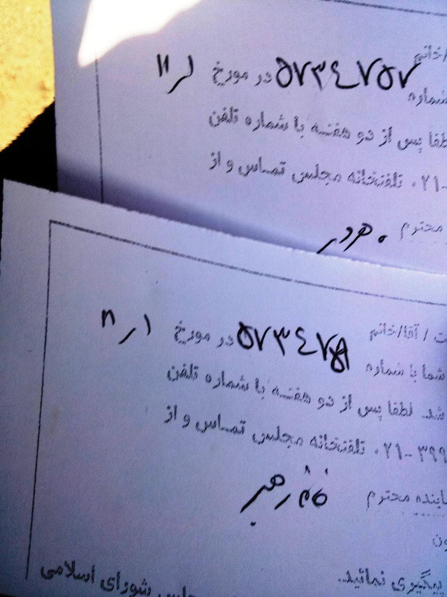

|
|

بیش از 2000 امضا در اعتراض به تبعیض های آموزشی به مجلس تحویل داده شد
چهار شنبه2 بهمن 1392
تغییر برای برابری - جمعي از فعالان زن و دانشجویی بیش از 2000 امضا را در اعتراض به سهمیه بندی جنسیتی در کنکور سراسری 91 و 92 که منجر به عدم پذیرش دختران در برخی رشته ها گردید، به مجلس ارائه دادند.
امروز اول بهمن ماه 92 جمعی از فعالان حقوق زنان، دانشجویی و کنشگران مدنی با حضور در مجلس اعتراض خود را به سهمیه بندی جنسیتی و صفر کردن سهمیه زنان در 77 رشته تحصیلی[1] مقطع کارشناسی توسط 36 دانشگاه در کنکور سراسری 91 و 14رشته تحصیلی[2] در کنکور سراسری 92 به نمایندگان مجلس اعلام کردند.
این فعالان با حضور در مجلس و گفتگو با محمد علي مختارپور رئیس کمیسیون اصل 90 و مجيد منصوری نماینده لنجان به روند تبعیض آمیزی که وزارت علوم، تحقيقات و فناوري ، سازمان سنجش آموزش کشور و دانشگاه های سراسری در پذیرش دختران در پیش گرفته اند، اعتراض کرده و خواستار حذف این تبعیض های آموزشی و احقاق حقوق دخترانی که سهمیه بندی مانع از قبولی آن ها در رشته های انتخابی شان بوده، شدند. معترضان به سهمیه بندی جنسیتی، بهدلیل عدم پذیرش حضوری از سوی فاطمه رهبر رئیس فراکسیون زنان مجلس و فاطمه آلیا عضو این فراکسیون نامه ای خطاب به رئیس فراکسیون زنان مجلس نوشتند و در آن اعتراض خود را بیان کردند. یکی از فعالان حضور یافته در مجلس موفق به گفتگوی تلفنی با شهلا میرگلو بیات از دیگر اعضای فراکسیون زنان گردید. خانم بیات در پاسخ اظهار داشت که برای بررسی این اعتراض باید درخواست به صورت کتبی به مجلس تحویل داده شود.
همچنین هروی نایب رييس کمیسیون آموزش نیز در گفتگوی تلفنی با یکی دیگر از فعالان حاضر در مجلس خواستار ارائه درخواست رسمی برای بررسی اين موضوع در این کمیسیون شد.
در ادامه فعالان درخواست های خود و امضاهای جمع آوری شده را تحویل دبیرخانه مجلس داده و در مقابل رسید دریافت کردند. به گفته این دبیرخانه، نمایندگان تا 15 روز دیگر نتایج بررسی خود را اعلام می کنند.

این فعالان قبلاً برای اعتراض به تبعیض های اعمال شده و تلاش برای اعاده حقوق دانشجویان با هم فکری تعدادی از وکلای مجرب دادگستری اقدام به تهیه دادخواستی کرده و با طی کردن روال قانونی از 36 دانشگاه مورد اشاره، سازمان سنجش آموزش کشور و وزارت علوم ،تحقيقات و فناوري با کمک دو تن از وکلا به دیوان عدالت اداری شکایت کرده و شکایت های خود را به ثبت رساندند. اولین شکایت در فروردین ماه 1392 (دولت دهم)، و دومین شکایت در شهریور ماه 1392 (دولت یازدهم) ثبت شده است.
این فعالان از رييس دولت یازدهم که یکی از وعده های انتخاباتی اش برابری جنسیتی و حمایت از حقوق زنان بود، نیز می خواهد به کلیه تبعیض های آموزشی علیه زنان پایان دهد.
در ادامه متن درخواست ها می آید:
ما جمعی از زنان و دانشجویان از شما به عنوان نماینده مردم در مجلس شورای اسلامی تقاضا داریم نسبت به حذف شدن سهم زنان در 77 رشته دانشگاهی در کنکور سراسری کارشناسی سال 91 و 14 رشته دانشگاهی سال 92 واکنش نشان دهید و نسبت به توقف این سیاست های تبعیض آمیز و احقاق حقوق تضعیع شده دانشجویان زن اقدام کنید. از وزارت علوم، سازمان سنجش کشور و روسای دانشگاه ها بخواهید به این سیاست های تبعیض آمیز پایان دهند. چنین تصمیمات تبعیض آمیزی آشکارا با اصل 21 قانون اساسی که ایجاد زمینه های مناسب برای رشد شخصیت زن و احیا حقوق مادی و معنوی او را از وظایف دولت می داند در تضاد است.
بیانیه اعتراضی نسبت به سیاست های تبعیض آمیز آموزشی علیه زنان:
در چند سال اخیر، سیاست های تبعیض آمیز آموزشی در ایران معضلات متعددی را برای داوطلبان ورود به دانشگاه ها ایجاد کرده که در این میان سهم زنان از تبعات و مشکلات ناشی از اجرای این سیاست ها، بر کمتر کسی پوشیده است. سهمیه بندی جنسیتی در کنار جریان حذف جنسیتی به عنوان دو بازوی اصلی این سیاست ها، در سال 91 به اوج خود رسید. 36 دانشگاه کشور، دختران را در 77 رشته تحصیلی نپذیرفتند. البته، در سال 92 به علل گوناگون از جمله فشارها و اعتراضات دانشجویی و همچنین باز شدن اجتناب ناپدیر فضای عمومی جامعه پس از انتخابات ریاست جمهوری، حذف سهمیه دختران نزول 37 درصدی داشت.
با این وجود، همچنان بی عدالتی و جریان حاکم بر فضای دانشگاه ها و نظام آموزشی کشور، نه تنها برای حضور زنان در عرصه های علمی و آموزشی فرصت مثبتی ایجاد نکرده، بلکه موانع متعددی را در مسیر پیشرفت آنان قرار داده است.زنانی که طی چند دهه گذشته، حضور پر رنگ خود را در فضای علمی و دانشگاهی کشور تثبیت کرده بودند، بالاجبار پشت صف قوانین حذف و سهمیه بندی جنسیتی، با حسرت به صندلی هایی می نگرند که صرفاً به خاطر زن بودن، از نشستن روی آنها منع شده اند.
بقاء و تداوم این سیاست های تبعیض آمیز موجب خواهد شد که به تدریج زنان از دسترسی عادلانه به خدمات و امکانات آموزش عالی دور شوند. پیامد جدی این سیاست ها، تنزل پایگاه اجتماعی و همچنین اقتصادی زنان در جامعه است. کاهش دسترسی زنان به آموزش عالی، سبب می شود که در بازار کار و اشتغال نیز فرصت های شغلی کمتری در رقابت با مردان تحصیل کرده نصیب زنان شود. و در نهایت، تاثیرات مخرب و محروم کننده این سیاست ها، بیشترین فشار را بر زنان فرودست جامعه، زنان روستایی، زنان طبقه کارگر، و زنان اقلیت های قومی و مذهبی، وارد می آورد. لاجرم، ضرورت دارد برای اجتناب از وقوع و تحقق عواقب جبران ناپذیر این سیاست ها، هرچه سریع تر چاره ای اندیشید.
طی یک سال گذشته، جمعی از فعالان حقوق زنان و عده ای از دانشجویان به همراه جمعی از ذی نفعان اجرای طرح های تبعیض آمیز جنسیتی، با تنظیم یک شکوایه از جنبه عمومی و تقدیم آن به دیوان عدالت اداری، ضمن تلاش قانونی جهت دادخواهی از مسؤلان ذی ربط از جمله ریاست جمهوری، وزارت علوم و روسای دانشگاه ها؛ توقف و جبران لطمات ناشی از اجرای طرح های تبعیض آمیز جنسیتی را خواستار شدند. از آنجایی که دیوان عدالت اداری به عنوان یکی از بالاترین مراجع قضایی، رسیدگی به تخلفات مسئولان را بر عهده دارد، امید است که پیگیری این شکایت گامی در راستای تثبیت حقوق زنان ایران باشد.
ما امضا کنندگان این بیانیه، ضمن حمایت از این شکایت و اعتراضات انجام شده، خواهان لغو هرچه سریع تر سیاست های تبعیض آمیز جنسیتی در عرصه آموزش عالی و رسیدگی به تضییع حقوق افراد زیان دیده از اعمال این سیاست ها، از سوی مسؤلان اجرایی کشور هستیم. باشد تا از این طریق، بر شعارها و وعده های داده شده توسط دولتمردان جدید، جامه عمل پوشانده شود.
اسامی امضا کنندگان به ترتیب حرف الفبا :
آزاده دائمی، 10 نفر خانوده اوحی، آذر تشکر، آذر صباغ، آذر عفیف، آراز امین ناصری، آرش نصیری اقبالی، آرمان امیری، آرمین شریفی، آزاده آزاد، آزاده خرازي، آزاده خشروشاهی، آزاده دلیر، آزاده دواچي، آزاده شهودی، آزاده فرامرزیها، آزاده کامیار، آزاده مولوی، آسيه امينى، آمنه زمانی، آمنه شیرافکن، آنجلا نوبهار، آنیه امین، آيدا خديوي نيا، آيدا سعادت، آيسان شوندي، آیدا ابروفراخ، آیدا قجر، آیدین ظریف، آیسان زرفام، ابراهيم عبدالله زاده، ابوالقاسم گلستانی، اتابک صادقی، احسان خطائی، احسان رهبرفرازی، احمد باطبی، احمد حمیدزاده، احمد رافت، ادریس صالحی گلسفیدی، اذین میرسیاح، اسماعیل زرگریان، اشکان هاشمی، اطلس خانبلوکی، اعظم اکبرزاده، اعظم خاتم، افروز مغزی، اكرم صادقي، اکبر کریمیان، اکرم احقاقی، اکرم خیرخواه، اکرم مصباح، الميرا پاشايي، الناز کیان، الناز محمدی، الناز ناطقی، الهه امانی، الهه فرساد، الهه کولایی، الهه محمدی، امجد حسین پناهی، امير حسين جلالي، امين مرادى، امید منتظری، امیر حسین سعادت، امیر کلهر، امیر یعقوبعلی، امین بهروززاده، امین پارسا، اندیشه جعفری، انسیه سلمانی، اویس اخوان، ایراندخت فامیلی
بابک بازرگان، بتول شریفی، بشیر احسانی، بنفشه اشرفی، بنفشه جمالی، بنفشه حجازی، بنفشه رنجی، بهار کلیشادی، بهارا بهروان، بهاره حسینی، بهاره مختاری، بهرام امامی، بهرام شجاعی، بهروز جاوید تهرانی، بهروز علوی، بهزاد فريدي، بهمن امینی، بهناز دانشور ساعی، بهناز شادی، بهناز مهرانی، بیتا گودرزی، بیتا نقاشیان، بیجا، پرستو اله یاری، پرستو فاطمی، پرستو فخاریان، پرهام میثاقیان، پروین اردلان، پروین بختیارنژاد، پروین شهبازی، پروین موسوی، پری آسف، پری احمدی، پری رضایی، پریسا ایمانی، پریسا روشن فکر، پریسا کاکائی، پوران شهرکی، پوریا پشتاره، پونه بريراني، پويا باقرى، پویان شعله ور، پویان مکاری، پيام روشن فکر، پیمان ملاذ، ترانه امیرتیموری، ترانه فروردين، توران پوری، ثمره شاه صفی، ثمین چراغی
جادی میرمیرانی، جعفر ابراهیمی، جعفر مرتضوی، جلوه جواهری، جمال عاملی، جواد علیخانی، جیران رهو، جیران مهربان، حامد پناهنده، حامد شفیعی، حبيب درزلو، حديثه بازرگان، حسن بیات، حسن حسين اوغلي، حسن نایب هاشم، حسنیه نجفی، حسين الهامي نژاد، حسين رامشي، حسين كماليان، حسین ابراهیمی، حسین رفیعی، حسین عبدی، حسین یزدانشناس، حمید حمیدی، حمید رضا واشقانی فراهانی، حمید قيصري، حمید کوثری، حمیده اعلایی، حمیده رجب زاده، خدیجه تورتیر، خدیجه مقدم، خسرو بندری
دانیال مرتضوی، درسا اسماعيلي، درسا سبحانی، دیبا احمدی، راد جمالی، راضیه خضری، راما هاشمی علیا، رامین عسکری زاده، رامین فارسی، ربابه طاهری، رحمان رحمانی، رخساره رجبی، رضا اسدآبادی، رضا پورکریمی، رضا خندان، رضا علیجانی، رضا قاضی نوری، رضا کریمی، رضا محمودی، رضا ملکی، رضا یزدانی، رضوان مقدم، رعنا جزایری، رعنا بنازاده، رقیه رضائی، رها عسکری زاده، روبان تبریزی، روجا بندرى، روحی شفیعی، روزبه آقاجری، روزبه روستائی، روزبه علمداری، رویا حکیمی، رویا کاشفی، ريحانه ريخته گر زاده طهراني، زارا امجدیان، زر یار، زهرا آزادفلاح، زهرا جلایی پور، زهرا جواهری، زهرا خندان، زهرا رحیمی، زهرا عباسيان، زهرا معین، زهرا مینویی، زهرا نعيمي، زهره اسدپور، زهره سروش فر، زویا امین، زیبا جلالی نائینی، زینب آژیراک، زینب پیغمبرزاده، زینب عیسی لو
س. قدسی، ساجد رنگ چيان، سارا آرین مهر، سارا اسمی زاده، سارا بابايي، سارا حسینی، سارا رحیمی، سارا رمضانی، سارا زاهدی، سارا صحرانورد فرد، سارا کریمی، سارا لقایی، سارا محبوبی، سارا همدانی، ساقی لقایی، سالار شريفى، سالومه رضازاده، ساناز الله بداشتی، ساناز خجسته سمیعی، ساناز کیهانفر، سپيده صدفي، سپیده اشرفی، سپیده اکبرپوران، سپیده الماسی منفرد، ستاره هاشمی، سجاد درويشي، سجاد مختاری، سجاد ویس مرادی، سحر بارانی، سحر حسینی، سحر دیناروند، سحر رضازاده، سحر سلحشور، سحر عارف، سحر عباسي، سحرناز سرلک، سروش سیادت، سعید ارمی، سعید رحیمی، سعید معتمدی، سعید نعیمی، سعیده اسدیپور، سعیده اسلامی، سعیده حیدری، سمانه خادمی، سمانه عابدینی، سمیرا افخمی، سمیرا حاتمی زاده، سمیرا درویشی، سمیرا عسگری، سمیه بهادری، سمیه رستم پور، سمیه رشیدی، سمیه کردنیا، سهراب بهداد، ﺳﻬﻴﻼ ﭘﻮﺭﻋﺎﺑﺪﻳﻦ، سهيلا خداديان، سهیل گلچین، سوده راد، سوده مشكات، سوده منصوری، سوزان کریمی، سوفیا صدیق پور، سولماز احمری، سونیا ترکمان، سونیا غفاری، سيامك اقتداري، سيد حسين رازيان، سيد محسن هاشمي، سيروان فتاحى، سيما شاه عباسي، سيمين سربازي، سیامند علوی، سیاوش قایم مقامی، سید احمد موسوی، سید محمد رضا حسینی، سیما قماشی، سیمین روزگرد، سیمین زحلی، سیمین کاظمی، سینا الله بداشتی
شادي روح شهباز، شادي مختاري، شادی خوشکار، شادی صدر، شاهین شیرزادی، شايان اصانلو، شايسته خسروي، شقايق يوسفي، شكوفه فرهادي، شكيبا طالبي كندري، شکوفه حبیب زاده، شکوه افیونی، شمسی خجسته اقبال، شهاب الدین شیخی، شهاب میراسماعیلی، شهرابي، شهرزاد رحيمي، شهره منصورى، شهلا جعفریان، شهلا عبدالله زاده لاهیجی، شهلا فروزانفر، شهلا هویدا، شهناز اجاقی، شهناز یلدا، شهيندخت مولاوردی، شهین غلامی، شيده طوراني، شيما معتمدي، شیرین احمدنیا، شیرین برق نورد، شیرین صور اصرافیل، شیما شعاعی، شیوا بدیهی نژاد
صابر خسروی، صبا جودکی، صبا شعردوست، طاهره یلفانی، طلعت تقی نیا، طهیره دانش، طیبه مرادی، عاطفه رنگریز، عاطفه قليايي، عالیه مطلب زاده، عرفان آزرم سا، عرفان سبزی پور، عسگر اهنین، عطیه وحیدمنش،علي تقي پور، علي خانمحمدي، علی افشاری، علی امیری، علی طالبی، علی طایفی، علی طیبی، علی عبدی، علی فتوتی، علی کاغذچی، علی کلائی، علی معظمی، علی نیکویی، علیرضا اوحدی، علیرضا حائری، علیرضا غفاری، غزال شولي زاده، غزال کیهانفر،غزاله احمدی، غزاله شعایی، غزاله مالكي، غزل اسبقي، غزل عسکری، غنچه قوامی
فائز احیا، فائزه رضازاده، فاطمه آرام نژاد، فاطمه حسینیان، فاطمه ذکایی، فاطمه عزیزی، فاطمه گوارايي، فاطمه مسعودیان، فاطمه يوسفي، فاطيما فردوس، فایزه کرمی کتکی، فتانه عبدالحسيني، فخری شادفر، فراز یکیتا، فرانك سعيدي، فرانک فرید، فرانک مظاهری، فرحروز رنجبر، فرحناز باتمانقلیچ، فرخنده جبارزادگان، فرزام دولتیفرد، فرزانه طاهری، فرشاد اسماعيلي، فرشته جلیلی، فرشته جمشیدی، فرشته طوسي، فرشید مقدم سلیمی، فرناز جعفری، فرناز کمالی، فرهاد نعمانی، فرهنگ رضایی، فرید امجدی زاده، فروغ رسولي، فروغ سمیع نیا، فریبا ارجمند، فریبا داودی مهاجر، فرید میراسماعیلی، فهیمه بهرامی، فواد شمس، فیروزه مهاجر
كاوه كرمانشاهي، کاوه رضائی شیراز، کاوه قاسمی، کاوه مظاهری، کاوه مظفری، کریم شامبیاتی، کمال ارس، کمال رحمانیان، کوشان کنعانی، کوکب واصفی، کیوان امیری الیاسی، کیوان قاسمی، گل چهر حمیدی منش، گلناز ال، گیتی پورفاضل، گیتی عاصمی، لادن هاشمی، لیلا اسدی، لیلا ایپکچی، لیلا صحت، لیلا فاضلی، لیلا موری
مائده صالحی، مانی صورتگر، مانی هوشور، ماهور وجدی، متین تلخابی، محبوبه حسین زاده، محبوبه عباسقلی زاده، محترم رحمتی، محدثه قزوینی، محسن مالجو، محسن هموردپور، محمد امینی، محمد پورقاسم، محمد حسن شفیعی، محمد رضا زندي، محمد رضا فولادی، محمد روزخوش، محمد سپاهی، محمد شوراب، محمد صیادی، محمد علمی، محمد قاسمي، محمد گرامیان، محمد مهدی نجفی خواه، محمد میرزایی، محمد نوروزي، محمدرضا اسكندري تربقان، محمدرضا حمیدی، محمدرضا شفیع زاده، محمود بهتاش، محمود زراع، محيا متيني، مرتضی اسماعیل پور، مرجان داودی، مرجان موسوی، مرجان واحدی، مرضيه نوراني، مرضیه امامی، مرضیه محمودی، مرضیه نوری، مرمر مشفقی، مرواريد باقری، مريم اذرنيا، مريم امى، مریم احمدی، مریم اخلاقی، مریم اهری، مریم بهرمن، مریم پناهی، مریم رحمانی، مریم زندی، مریم سادات یحیوی، مریم سجادپور، مریم شیخ، مریم طهماسبی، مریم کاویانی، مریم میرزانژاد، مریم نوروزنیا، مریم یاسمین، مژان فدایی، مژده آذرنیا، مسعود ابراهيم نيا، مسعود چناسی، مسعود شب افروز، مسعود صادقي، مصطفی کریمخان زند، مطهره سعيدي، معصومه زمانی، معصومه محمودی، معصومه مير هاشمي، معین پناهنده، ملوک نمازقلان، ملیکا گرجی، منصوره شجاعی، منوچهر اردلان، منوچهر فرید، منوچهر لرستانی، منيژه موذن، منیر طاهری، منیر نسیم، منیره اکبرپوران، منیره کاظمی، مهدى محسنى، مهدی پورمهدی، مهدی توپچی، مهدی جهانشاهلو راد، مهدی طاهری، مهدی عربشاهی، مهدی نیکوئی، مهدیه فراهانی، مهدیه گلرو، مهران دوستي، مهرداد ذاکر ملکی، مهرداد فلاحی، مهرسا لطانی، مهرگان سلطانی، مهرنوش اعتمادی، مهرنوش زنوزی، مهرنوش نجفی راغب، مهرنوش هاشمي، مهری جعفری، مهسا اکبری، مهسا طالبی، مهناز محمدي، مونا شکیبا، ميثم خدمتي، ميلاد عبدالهي، مينا صالحي، میترا واسعی، میثاق افشار، میلادپورعیسی، مینا پناهی، مینا جعفری، مینا دارابی، مینا طلوعی آذر، مینا عزیزی، مینا عمیقی، مینا کشاورز، مینو ایمانی، مینو غلامی، مینو مرتاضی لنگرودی
نازلی فرخی، نازنین کاظمی، ناهید به، ناهید توسلی، ناهید جعفری، ناهید کشاورز، ناهید میرحاج، نجما رحمانی، نجمه زارع، نجیبه اسدپور، ندا بطحایی، ندا ناجی، نرگس افشم، نرگس حسن لي٬ نرگس صابري، نرگس صحرانورد فرد، نرگس کاویانی، نسرین افضلی، نسرین حمیدی، نسرین ملکی، نسیم سرابندی، نسیم سلطان بیگی، نسیم فروردین، نعیم آقایی، نفیسه آزاد، نفیسه سعادتی، نفیسه محمدپور، نگار انسان، نگار توکلی، نگار رهبر، نگار سعیدی، نگار کیهانفر، نگين نعمتي، نگین باقری، نگین کیهانفر، نلی عظیمی، نواب رحیمی پور، نوش آفرین سمواتی، نوشین احمدی خراسانی، نوشین کشاورزنیا، نوید قیداری، نيما شمسايي، نیایش قربان دولتی، نیره توحیدی، نیکزاد زنگنه، نیلوفر توکلی
هاجر ثباتی، هادی قربانی، هايده تابش، هایده مغیثی، هدا امینیان، هدی کیانی راد، همایون حاجی خانی رودسری، هیوا خدری، وحیده قندی، وحیده مولوی، ونوس عامری، ویدا حاجبی، ياسمن حاجى نبى، یاسمن سرهنگی، یاسمن مختاری
لازم به توضیح است که تاکنون جمعی از معترضان به سهمیهبندی جنسیتی در دو نوبت نسبت به این تبعیض که در مغایرت کامل با اصول 3، 19،20 ،21 ،30 و 40 قانون اساسی است، از وزارت علوم، سازمان سنجش و 36 دانشگاه به دیوان عدالت اداری شکایت کردهاند و تصمیم دارند که در آینده نزدیک اعتراض خود را به مجلس شورای اسلامی نیز ارائه کنند.
اسامی امضاکنندگان جدید بیانیه:
آذر طاهرآبادی- آرش ادیب زاده- آرمان براری- آرین غفاری- آزرم نوروزی- آیدا منتظران- آیدا مهرانی- آیدین خلیلی خواه- ابراهیم مرتاضی- احمد آرام- احمد برهان- احمدی قدیمی- اذر عسگري- اردشیر اسفندیاری- اشرف رهگذر خویگانی- اكبر مهدی- الناز فاطمی- الهام پاک- الهام کاظمی- الهام میرفخرایی- الهه توکلی- الهه فراهانی- امیر عسگری- امیرحسام فرامرزی- امیرحسین خازه- ایرج ادیب زاده
باربد سیاوشی- بشیر کریمی- بلیندا دیلارد- بهاره بقایی- بهاره خشوعی- بهروز محمودیان- بهزاد فریدی- بهشاد تجمل- بهمن سلطان علي- بهنام خدادوست- بیژن برهان- پانیذ متقی- پرستو بیرانوند- پروین ابراهیمی- پروین ضرابی-پريسا خوش رفتار- پريسا زهري- پریسا عظیم زاده- پگاه کریم بخش- پویا قربانی- پویا نایل پور- پیام اولادعظیمی- ترانه اسدزاده- ثریا شیرافکن
جعفر تكبيري- جلال حمزه- جواد ميرزايي- حامد سبكبار- حانیه سلیمانی- حسن نایب هاشم- حسن هادوی- حسین دهقانفرد- حسین رازیان- حشمت خورشيدي- حميدرضا محقق- حميده تقي زاده- حمید شریفی- حمید نظری- حمید وطن دوست- حمیده چگونیان- حمیده نوری-
داود بیات- درسا جلالیان- دنا بابااحمدی- دنيا روشندل- ر- مجیدی- ربابه جعفری- رژین لاهونی- رضا افضلیان- رضا عباسي- رضا قریشی- رعنا مغانلو- رکسانا احسانی چمبلی- روح الله ربیعی- روژین محمدی- رويا اسفندياري- رویا جعفری- ریحانه خزانه دارلو- زهرا اميرخانلو- زهرا ميرزايي
سارا افلاکی- سارا برین- سارا سماوات- سارا شاه محمدی- سارا طاهری- سارا فدوی- سارا لاریجانی- ساقي عبدالهي- ساناز سیگارچی- ساناز محسن پور- سبا ف- سپیده برنجی- سپیدیا احمدپور- ستاره سجادی- ستاره سعیدی- ستاره صولتی-سحر تجریشی- سحر ترابی- سحر فکردار- سحر کریمی- سحر لزومي- سحر مفخم- سعاد کریمی- سعيد جليل- سمانه جعفرقلی- سمانه روزبهاني- سمیرا گلشن- سهيلا نادري- سهیلا شفقی- سوزان کریمی خویگانی- سوسن کریمی خویگانی- سویل باغبان کریمی- سیاوش ش- سید حسن متولیان- سیده زهرا حسینی فر- سیده عارفه طزری- سیده مریم میرحسینی- سینا کریمی خویگانی- شادي شجاع- شادی حیدری فر- شبنم نوری- شقايق نبوي- شهرزاد- شوق شاه حسینی- شيوا اكبرنيا- شيوا خداجو- شیرین نمازی- صادق مدیری- صبرا رضایی- صبری نجفی- صحرا بیرانوند
عاطفه خجسته- عاطفه میریگانه- عباس شهرابی فراهانی- عسگر اهنین- علي طالبي اسفندياري- علي نظري- عليرضا ماندگاري- علی کربلایی- علیرضا شفیعی- علیرضا فرجی- عیسی صفا- غزال تاجیک- غزال مرادی- فائزه مومن هروی- فاطمعه کریمخان- فاطمه امیرپور- فاطمه پور ميرزا جان- فاطمه حیدری- فاطمه خجسته- فاطمه درعایی- فاطمه رجبی- فاطمه زارع- فاطمه کبریت چی- فتانه صادقی- فراز فربخش- فرزام درستکار- فرزام صفّاریان- فرزانه ح- فرزانه گنجی- فرشته محنون- فرنگیس بیات- فروغ علایی روزبهانی- فریبا اسدیان- فریده خزائی- فواد محمدی- كامران بخت شاهي- كامران پاپازاده- کامران چنگیزیان- کوثر بیات- لاله خدنگی
م.معطر- مارال خدادوست- مارال فتحعلی- مجتبي حاذق- مجید آذرپی- مجید پناهی- محبوبه تدین- محبوبه کرمی- محدثه سنبلي- محدثه لطيفي- محسن گلچین- محمد حسن پارسا- محمد صادقی- محمد صیادی- محمد محمدی- محمد مرادی- محمدرضا خندان- محیا امیدی- مرجان منفرد- مریم پرواز- مریم جوادی- مریم روستایی صفت- مریم قنادزاده- مریم گلی- مزدک لیمکشی- مژده رنجبر- مژگان برهان- مستانه قائمی- مستوره السادات مدسی- مسعود فتحی- مصطفي باد زهره- معصومه اسدالهی- ملیحه محمدی- مه تا قلی زاده انصاری- مه لقا گنجی- مهتاب میرزایی- مهدي نجار فيروز جايي- مهدی سپهری- مهدی گنجی- مهدی مالمیر- مهدی محمدی- مهدی محمودی- مهدی مزینانی- مهران زرچی- مهرداد سبز- مهرناز مهاجری- مهسا باقری فرد- مهسا رست- مهسا رمضانی- مهسا طيبي- مهسا كيوان- مهسا محمدپور- مهسا محمدی- مهسا مژدهی- مهناز جواهری- میثم قهوه چیان- مینا زنوزی
ن. غیاثی- نادی صبوری- نازنين جمشيدي- نازی عظیما- ناصر فرهنگی- نجمه امیدپرور- ندا عرب- نرگس توسليان- نرگس فکردار- نریمان رحیمی- نسترن احمدي- نسيم برنج كار- نسیم خسروی- نسیم سلطان بیگی- نشاط زرگری- نعیمه دوستدار- نفیسه موسوی- نگار محمدی زاده- نگين فلاحي فر- نوید آئینی- نوید محبی- نیکا علیمی- نیلوفر رضایی- نیما نامداری- هادي رجبي- هدا عمیدی- هوشنگ گلشنی- ویدا بیگلری- یاسمن نوربخش- یاسمین رضایی- یوسف گنجی
آخرین اسامی اضافه شده
سهراب کریمی- فروزنده هادی- پتیسا پیران- نیایش قربان دولتی- سودابه حاتمی مقدم- سارا طباطبایی - سمانه موسوی- حدیث اسدی- اميد اقوامي- میترا مقیمی- رعنا بنازاده- آیسان زرفام- زهرا دادرس- رضا محمودی- هاجر کبیری- مرضیه پرواز- نگین نعمتی- محمد ابراهیمی- مریم بابایی- زهره طراوتی- نیوشا جم- گیتی نورالدین- سورن مصطفایی- زهره عراقی- آزاده نعمتی